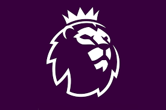
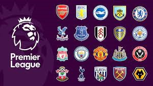

English premier league

English Premier League ( English : this Premier League ) is a league football first division in Englandhas been using the name of the Premier League in 1992 .
League consists of 20 team, sponsored by the Bank of Barclays , so Barclays Premier League is called ( in English : The League is the Barclays this Premier ).
The league starts in August and ends in May , and each team plays 38 games, for a total of 380 games per season.
Most of the matches are played on Saturday and Sunday , but a small number of matches are played during the midweek evenings.
Until 1992, the highest score in English football was First Division; Since then, the Premier League has become the highest.The English Premier League was formed on February 20, 1992 , after the first division clubs decided to separate from the First Division, which was established in 1888 ; So take advantage of the lucrative deals from television rights.
Since then the Premier League has become the most watched league in the world, and it is also the most profitable football league; With club revenues totaling 1.93 billion dollars in the 2007-2008 season, he is also the first in the UEFA ranking of leagues in terms of performance in European championships during the past five years, surpassing the Spanish League And the Italian League .

Since the current tournament system began in 1992 , and out of a total of 44 clubs competing for the Premier League, only six have won:
Arsenal (3 titles), Blackburn Rovers (1 title), Chelsea (6 titles), Manchester City (4 titles) , Manchester United (13 title), Leicester City
( the title of one). The title holder in the current league is Liverpool FC .
The Premier League competition was formed on February 20, 1992 which replaced the English Professional League in the 1992-1993 season. This historic step means changing the tournament system that lasted 104 years and changing its system, which includes a four-division league. This step was to promote football in England after suffering in the mid-eighties from poor financial means and the problems of English hooligans.
The first meeting to sign the championship charter took place on July 17, 1991. After agreeing to establish the league, work began to search for sponsors for the tournament and to issue a special license for television broadcasting. On 27 May 1992 the Premier League was announced as a company working in cooperation with the Football Association.